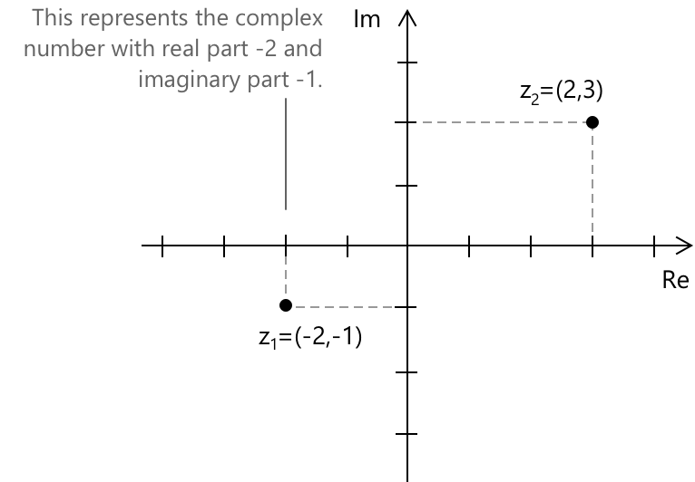
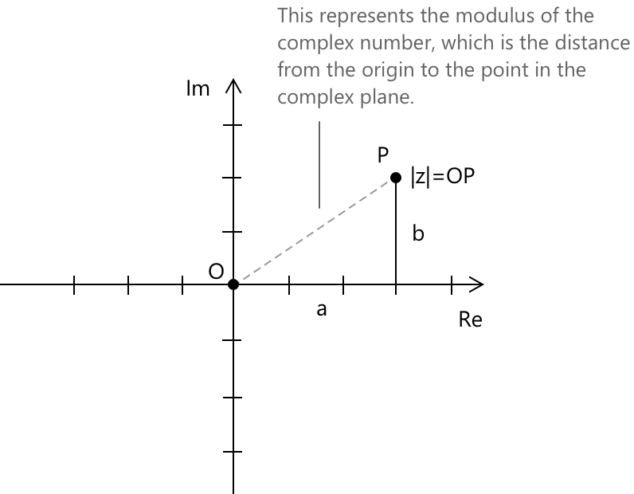

Комплексні числа
Вступ
Комплексні числа виникають для подолання обмежень множини дійсних чисел \(\mathbb{R}\), зокрема неможливості добування коренів парного степеня з від'ємних чисел. Одним із основних наслідків цього обмеження є неможливість визначити розв'язання квадратного рівняння з від'ємним дискримінантом.
У множині дійсних чисел \( \mathbb{R} \) неможливо знайти число, квадрат якого дорівнює \(-1\), оскільки квадрат будь-якого дійсного числа завжди є невипадковою величиною (невід'ємним). Отже, розв'язання рівняння \( p(x) = x^2 + 1 = 0 \) не має розв'язків у \( \mathbb{R} \). Дійсно, це призвело б до \( x^2 = -1 \), що ніколи не виконується в множині дійсних чисел \( \mathbb{R} \).
Починаючи саме з цього рівняння, ми вводимо символ \( i \), відомий як уявна одиниця, яка визначається властивістю: \[ i^2 = -1 \]
Таким чином, рівняння \( x^2 + 1 = 0 \) має два різні комплексні корені, що дорівнюють \( \pm i \).
Побудова комплексних чисел
Запровадження комплексних чисел іноді розглядають як питання зручного позначення, ніби символ \( i \) просто оголошується таким, що задовольняє \( i^2 = -1 \), і питання вважається вирішеним. Такий підхід залишає без відповіді важливе питання: чи існує насправді такий об'єкт, і якщо так, то в якому математичному сенсі? Відповідь вимагає короткої екскурсії в побудову \( \mathbb{C} \) з дійсних чисел.
Початковою точкою є декартовий добуток \( \mathbb{R}^2 \), множина всіх впорядкованих пар дійсних чисел. Кожен елемент цієї множини є парою вигляду \( (a, b) \), де \( a, b \in \mathbb{R} \). Ця множина відома як геометричний об'єкт, а саме евклідова площина, але мета тут — наділити її алгебраїчною структурою, перетворивши її на поле. Для цього на \( \mathbb{R}^2 \) мають бути визначені дві бінарні операції: додавання та множення.
Додавання визначається покомпонентно. Дано дві пари \( (a, b) \) та \( (c, d) \), їхня сума є наступною: \[ (a,\, b) + (c,\, d) \;=\; (a + c,\; b + d) \] Це природне розширення додавання векторів на площині й не викликає труднощів.
Множення є більш тонким, і саме тут алгебраїчна структура комплексних чисел відрізняється від структури \( \mathbb{R}^2 \), розглянутої лише як векторний простір. Добуток двох пар визначається наступним чином: \[ (a,\, b) \cdot (c,\, d) \;=\; (ac – bd,\; ad + bc) \] Це правило не є довільним. Це єдине множення, яке перетворює \( \mathbb{R}^2 \) на поле, що розширює \( \mathbb{R} \), що стане очевидним, як тільки зв'язок зі стандартним алгебраїчним позначенням буде роз'яснений. Множина \( \mathbb{R}^2 \), наділена цими двома операціями, позначається \( \mathbb{C} \), а її елементи називаються комплексними числами.
Дійсні числа природно вбудовуються в \( \mathbb{C} \) через ідентифікацію \( a \mapsto (a, 0) \). Можна безпосередньо перевірити, що це відображення зберігає як додавання, так і множення, отже \( \mathbb{R} \) міститься всередині \( \mathbb{C} \) як підполе в точному алгебраїчному сенсі. Елемент \( (0, 1) \), який не має відповідника в цій вбудованій копії \( \mathbb{R} \), відіграє особливу роль. Обчислення його квадрата за правилом множення дає наступний результат: \[ (0,\, 1) \cdot (0,\, 1) \;=\; (0 \cdot 0 – 1 \cdot 1,\; 0 \cdot 1 + 1 \cdot 0) \;=\; (-1,\; 0) \] За наведеною вище ідентифікацією пара \( (-1, 0) \) відповідає дійсному числу \( -1 \). Іншими словами, елемент \( (0, 1) \) множини \( \mathbb{C} \) задовольняє саме той зв'язок, який традиційно вимагається від символу \( i \). Цей елемент називається уявною одиницею і позначається \( i \), так що за означенням \( i = (0, 1) \) і, як наслідок, \( i^2 = -1 \). Таким чином, властивість \( i^2 = -1 \) є не постулатом, накладеним на невизначений символ, а теоремою, що випливає з правила множення на \( \mathbb{R}^2 \).
З цим позначенням кожне комплексне число \( (a, b) \) може бути розкладене як комбінація двох базисних елементів \( (1, 0) \) та \( (0, 1) \), які відповідають \( 1 \) та \( i \) відповідно. Розклад набуває знайомого вигляду \( a + bi \), оскільки виконується наступний ланцюг рівностей: \[ \begin{align} (a,\, b) &= (a,\, 0) + (0,\, b) \\[6pt] &= a\cdot(1,\, 0) + b\cdot(0,\, 1) \\[6pt] &= a + bi \end{align} \] Позначення \( z = a + bi \) таким чином є компактним кодуванням впорядкованої пари \( (a, b) \), де \( a \) називається дійсною частиною, а \( b \) — уявною частиною \( z \). Вони записуються як \( \mathrm{Re}(z) = a \) та \( \mathrm{Im}(z) = b \). Зауважимо, що уявна частина — це дійсне число \( b \), а не величина \( bi \).
Залишається перевірити, чи виконуються алгебраїчні властивості, що очікуються від поля. Перевірка є переважно механічною, але варто її підсумувати. Відносно додавання \( \mathbb{C} \) утворює абелеву групу: комутативність та асоціативність успадковуються безпосередньо від \( \mathbb{R} \), нейтральним елементом по додаванню є \( (0, 0) \), а протилежним елементом до \( (a, b) \) є \( (-a, -b) \).
Множення також є комутативним і асоціативним, що можна підтвердити прямим обчисленням, а нейтральним елементом по множенню є \( (1, 0) \). Дистрибутивний закон виконується. Єдина властивість, що потребує справжньої уваги, — це існування обернених елементів по множенню для ненульових елементів. Дано \( (a, b) \neq (0, 0) \), перевіримо, що його обернений елемент по множенню — це наступна пара: \[ (a,\, b)^{-1} \;=\; \left(\frac{a}{a^2 + b^2},\; \frac{-b}{a^2 + b^2}\right) \] Знаменник \( a^2 + b^2 \) є строго додатним саме тоді, коли \( (a, b) \neq (0, 0) \), що гарантує коректність формули для кожного ненульового комплексного числа. Висновок полягає в тому, що \( \mathbb{C} \), як побудоване, є полем. Більше того, оскільки \( \mathbb{R} \) вбудовується в нього як підполе, \( \mathbb{C} \) є полем розширень \( \mathbb{R} \). Це і є той точний математичний сенс, у якому комплексні числа розширюють систему дійсних чисел.
Можна також зауважити, що як векторний простір над \( \mathbb{R} \), поле \( \mathbb{C} \) має розмірність два з базисом \( {1, i} \). Саме ця двовимірність робить геометричну інтерпретацію на комплексній площині такою природною: дійсна та уявна частини комплексного числа слугують координатами відносно цього базису.
Описана побудова також узагальнюється: заміна \( \mathbb{R} \) довільним полем \( F \) та пошук розширення, в якому обраний незвідний поліном має корінь, призводить до ширшої теорії розширень полів, для якої \( \mathbb{C} \cong \mathbb{R}[x]/(x^2 + 1) \) є найпростішим і найважливішим прикладом.
Означення
Комплексним числом \( z \) називається число вигляду \( z = a + bi \), де \( a \) та \( b \) — дійсні числа. Множина комплексних чисел позначається \( \mathbb{C} \) і формально визначається наступним чином: \[ \mathbb{C} := { z = a + ib \mid a, b \in \mathbb{R}} \] Нехай \( z \) — будь-яке комплексне число. Величину \( a \) називають дійсною частиною \( z \) і позначають \( \mathrm{Re}(z) \), а \( b \) називають уявною частиною \( z \) і позначають \( \mathrm{Im}(z) \): \[ z = a + ib \quad \rightarrow \quad \begin{cases} \mathrm{Re}(z) = a \\[0.6em] \mathrm{Im}(z) = b \\ \end{cases} \]
- Представлення \( z = a + ib \) називається алгебраїчною формою комплексного числа. Як було встановлено в наведеній вище побудові, комплексне число \( a + bi \) є впорядкованою парою \( (a, b) \in \mathbb{R} \times \mathbb{R} \), а множина \( \mathbb{C} \) збігається з декартовим добутком \( \mathbb{R} \times \mathbb{R} \), оснащеним відповідними операціями.
- Комплексне число \( z = 2 + 3i \) має дійсну частину \( 2 \) та уявну частину \( 3 \).
- Числа вигляду \( z = ib \) називаються чисто уявними числами.
Хоча алгебраїчна форма є найбільш відомим представленням комплексних чисел, альтернативним і часто потужнішим способом їх вираження є їхня полярна тригонометрична форма: \[z = r (\cos\theta + i\sin\theta) \] Іншим представленням є показникова форма: \[z = r e^{i\theta} \]
Комплексна площина
Завдяки структурі множини \( \mathbb{C} \) як декартового добутку, комплексні числа можуть бути представлені геометрично на комплексній площині (також відомій як площина Гаусса або Арганда), де дійсна частина відповідає координаті \( x \), а уявна частина відповідає координаті \( y \). Таким чином, комплексне число:
\[ z = x + iy \]
може бути представлене як точка \( (x, y) \) на площині, яка відома як площина Гаусса (або комплексна площина).

Чисто уявне число представляється впорядкованою парою \( i = (0,1) \).
Спряжене число та модуль
Дано комплексне число \( z = a + bi \), тоді спряженим до \( z \) називається комплексне число:
\[ \overline{z} = a - bi \]
\( \overline{z} \) представляється на комплексній площині точкою, симетричною відносно \( z \) щодо осі \( x \).

Дано комплексне число \( z = a + bi \), тоді модуль \( z \) визначається як:
\[ |z| = \sqrt{a^2 + b^2} \]
Він представляє відстань від початку координат до точки \( (a, b) \) на комплексній площині. Це означення безпосередньо випливає з теореми Піфагора, оскільки модуль відповідає гіпотенузі прямокутного трикутника з катетами довжиною \( |a| \) та \( |b| \):
\[ |z|^2 = a^2 + b^2 \]

Приклад
Розглянемо комплексне число \(z = 3 + 2i\). Використовуючи формулу модуля, підставимо \( a = 3 \) та \( b = 2 \):
\[|z| = \sqrt{3^2 + 2^2} = \sqrt{9 + 4} = \sqrt{13}\]
Таким чином, модуль \( z = 3 + 2i \) дорівнює:
\[|z| = \sqrt{13} \approx 3.61 \]
Це значення представляє відстань від \( z \) до початку координат на комплексній площині для комплексного числа \(3 + 2i\).
Аргумент
Аргументом комплексного числа \( z = a + bi \) є кут \( \theta \), що утворюється між позитивною дійсною віссю та відрізком, що з'єднує початок координат із точкою \( (a, b) \) на комплексній площині. Він вимірюється в радіанах, проти годинникової стрілки від позитивної дійсної осі, і позначається як \( \arg(z) \).
Аргумент не є однозначно визначеним: будь-які два кути, що відрізняються на ціле кратне \( 2\pi \), описують той самий геометричний напрямок. Щоб усунути цю неоднозначність, зазвичай працюють із головним аргументом, що позначається \( \mathrm{Arg}(z) \), який є єдиним значенням \( \theta \), що задовольняє наступну умову: \[ -\pi < \mathrm{Arg}(z) \leq \pi \]
Обчислення аргументу потребує обережності, оскільки наївна формула \( \theta = \arctan(b/a) \) є недостатньою: функція арктангенс повертає значення лише в інтервалі \( (-\pi/2,, \pi/2) \), що охоплює лише праву половину комплексної площини та взагалі не працює, коли \( a = 0 \). Правильне визначення \( \theta \) залежить від квадранта, в якому лежить точка \( (a, b) \), і має розглядатися окремо для кожного випадку.
Коли \( a > 0 \), точка лежить у правій напівплощині, і головний аргумент задається безпосередньо арктангенсом. \[ \mathrm{Arg}(z) = \arctan\!\left(\frac{b}{a}\right) \] Коли \( a < 0 \) і \( b \geq 0 \), точка лежить у другому квадранті, і необхідно додати поправку \( \pi \), щоб привести кут до правильного діапазону. \[ \mathrm{Arg}(z) = \arctan\!\left(\frac{b}{a}\right) + \pi \] Коли \( a < 0 \) і \( b < 0 \), точка лежить у третьому квадранті, і поправка становить \( -\pi \). \[ \mathrm{Arg}(z) = \arctan\!\left(\frac{b}{a}\right) – \pi \] Коли \( a = 0 \), точка лежить на уявній осі, і арктангенс не визначений. У цьому випадку аргумент визначається безпосередньо зі знака \( b \): якщо \( b > 0 \), то \( \mathrm{Arg}(z) = \pi/2 \), а якщо \( b < 0 \), то \( \mathrm{Arg}(z) = -\pi/2 \). Випадок \( z = 0 \) виключається, оскільки аргумент початку координат не визначений.
Для ілюстрації розглянемо комплексне число \( z = -1 + i \). Його дійсна частина від'ємна, а уявна частина додатна, отже точка лежить у другому квадранті. Застосування арктангенса до відношення \( b/a = 1/(-1) = -1 \) дає \( \arctan(-1) = -\pi/4 \), що потрапляє в четвертий квадрант і, отже, є неправильним. Оскільки \( a < 0 \) і \( b \geq 0 \), необхідно застосувати поправку \( +\pi \), що дає наступне: \[ \mathrm{Arg}(z) = -\frac{\pi}{4} + \pi = \frac{3\pi}{4} \] Це значення узгоджується з геометричним положенням \( z = -1 + i \): точка лежить на рівній відстані від обох осей у другому квадранті, утворюючи кут \( 135° \) з позитивною дійсною віссю.
Властивості \(\mathbb{C}\)
Сума та добуток комплексних чисел задовольняють асоціативну, комутативну та дистрибутивну властивості, так само як і множина дійсних чисел. Асоціативна властивість для суми та добутку. При додаванні або множенні комплексних чисел спосіб групування чисел не впливає на результат. \[(z_1 + z_2) + z_3 = z_1 + (z_2 + z_3) \] \[(z_1 \cdot z_2) \cdot z_3 = z_1 \cdot (z_2 \cdot z_3) \] Комутативна властивість. Порядок, у якому два комплексних числа додаються або множаться, не змінює результат. \[z_1 + z_2 = z_2 + z_1 \] \[z_1 \cdot z_2 = z_2 \cdot z_1 \] Дистрибутивна властивість. Множення числа на суму дає той самий результат, що й множення кожного доданка окремо з наступним додаванням отриманих добутків. \[z_1 \cdot (z_2 + z_3) = z_1 \cdot z_2 + z_1 \cdot z_3 \]
Комплексне число \( 0 + 0i \) є нейтральним елементом по додаванню в \( \mathbb{C} \), оскільки для будь-якого комплексного числа \( z = a + bi \) маємо: \[ \begin{align} z + (0 + 0i) &= (a + bi) + (0 + 0i) \\[6pt] &= (a + 0) + (b + 0)i \\[6pt] &= a + bi \\[6pt] &= z \end{align} \] Комплексне число \( 1 + 0i \) є нейтральним елементом по множенню в \( \mathbb{C} \), оскільки для будь-якого комплексного числа \( z = a + bi \) маємо: \[ \begin{align} z \cdot (1 + 0i) &= (a + bi) \cdot (1 + 0i) \\[6pt] &= a \cdot 1 + a \cdot 0i + bi \cdot 1 + bi \cdot 0i \\[6pt] &= a + bi \\[6pt] &= z \end{align} \]
Протилежним до \( a + bi \) є комплексне число: \[-(a + bi) = -a - bi \] Оберненим до ненульового комплексного числа \( z = a + bi \) є комплексне число: \[\frac{1}{z} = \frac{a}{a^2 + b^2} - \frac{b}{a^2 + b^2} i \] Комплексні числа вигляду \( z = a + 0i \), де уявна частина дорівнює нулю, є саме дійсними числами.
Множину комплексних чисел \( \mathbb{C} \) неможливо впорядкувати таким чином, щоб це було сумісно з додаванням та множенням. Якби існував повний порядок \( \leq \) на \( \mathbb{C} \), ми мали б бути в змозі порівняти \( i \) з \( 0 \). Можливі два випадки:
- Якщо \( i > 0 \), то множення обох частин на \( i \) дає \( i^2 = -1 > 0 \), що є суперечністю.
- Якщо \( i < 0 \), множення обох частин на \( i \) знову призводить до тієї самої суперечності: \( -1 > 0 \).
Оскільки жоден випадок не є правильним, жоден повний порядок на \( \mathbb{C} \) не може бути визначений.